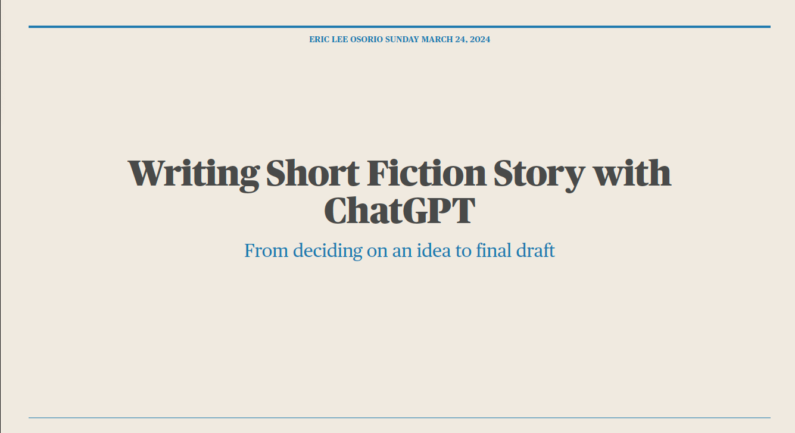
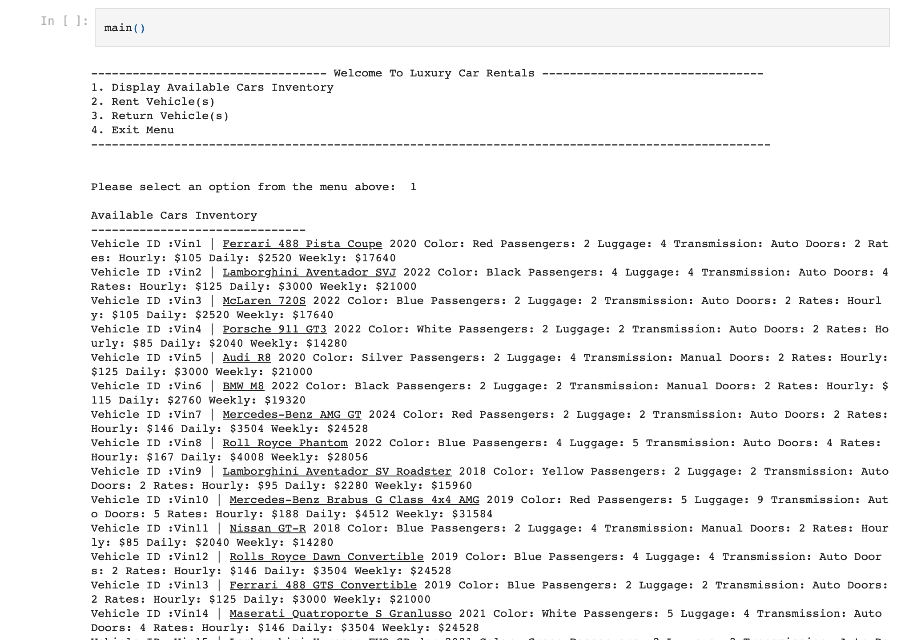
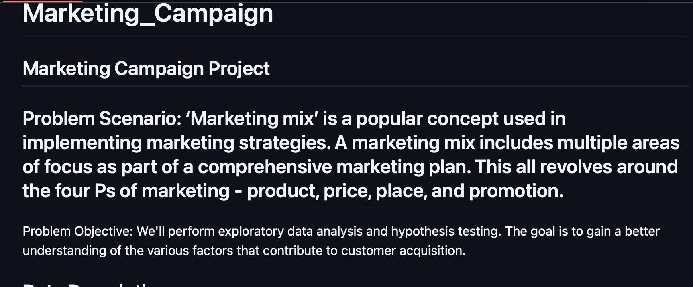
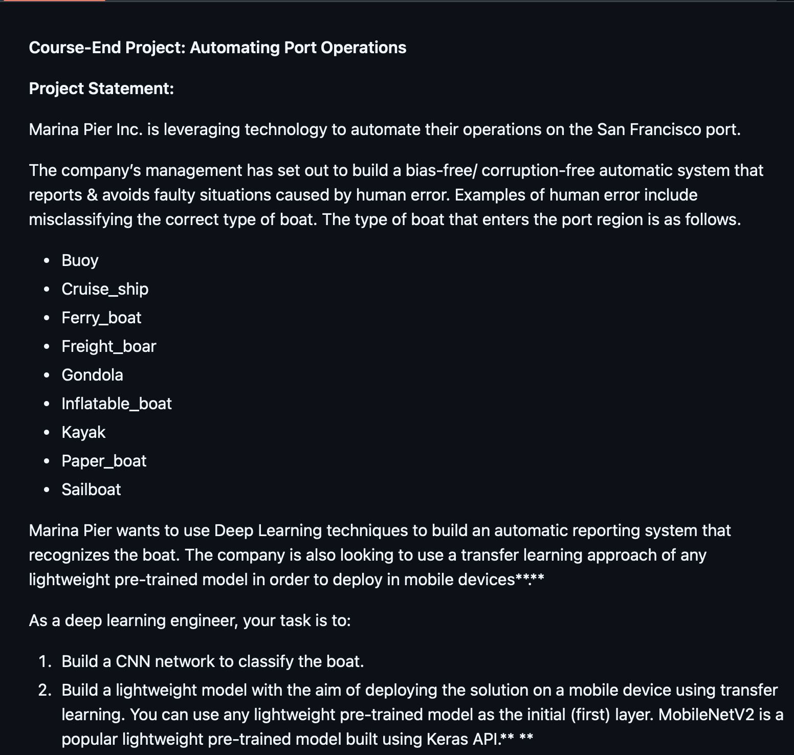
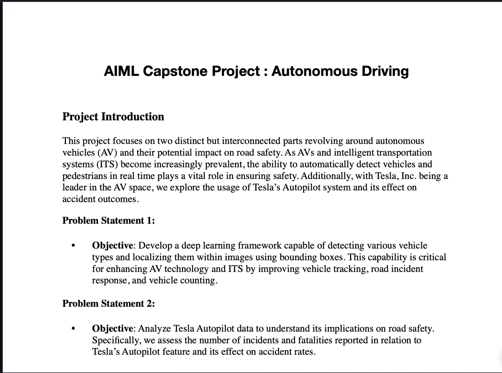

Github links to projects
AI: ChatGPT Transhumanist Short Story Collaboration

Python: Car Rental Terminal Project

Data Analysis: Exploratory Data Analysis, Visualizations and Hypothesis Testing for a Marketing Campaing

Machine Learning: Employee Turnover Prediction Model Project

Boat Classification CNN and Transfer Learning Project

Autonomous Driving Object Recognition and Analysis Project
